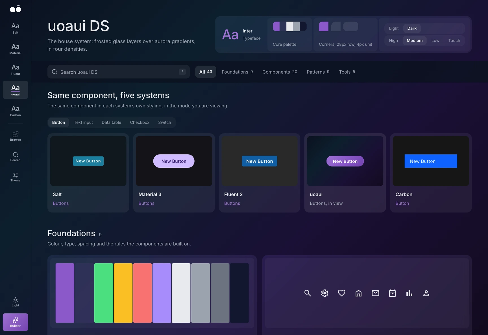
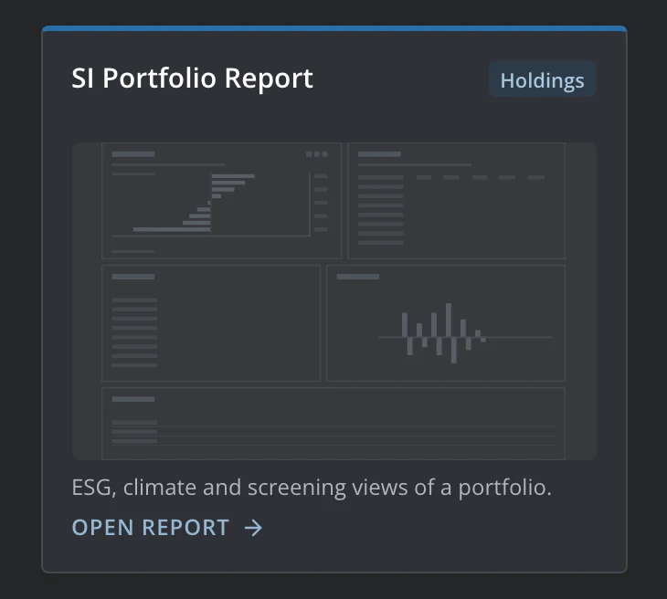
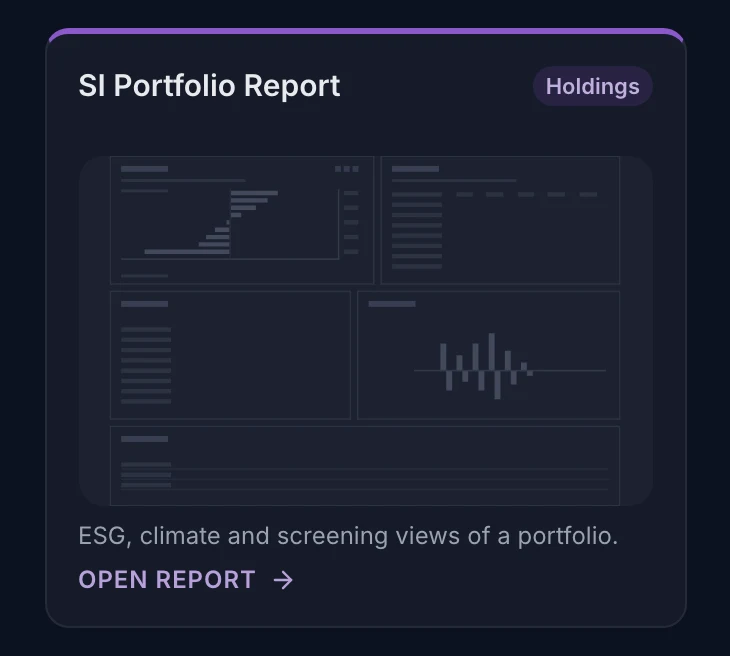
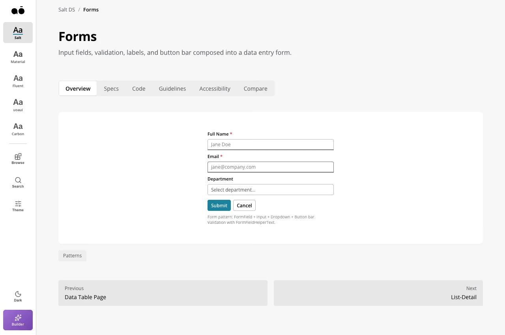

uoaui.ai
I designed uoaui to answer a question I kept coming back to in finance. How would the same dashboard feel in a different design system?
about.
Overview
A generated interface could look convincing in a review and still leave a developer guessing which components to use. I wanted to take one brief through to a working screen and inspect the choices along the way.
My role
I shaped the workflow from the first Figma layouts to a working prototype. I used the same names for controls throughout so designers and engineers could recognise them at handover.
Design process
In my first prototype, I had to match each part of a generated layout to a real component by hand. I gave the builder a catalogue to draw from, so a report card would stay a report card when I switched systems.
From a brief to a design review
For a risk review, I can describe the summary I want to see for each fund or start with one of 13 finance templates. If one card needs a change, I select it and describe the edit. I can also move or resize it with the keyboard.
In a review, I can put the same report on a phone-sized canvas and switch between Salt and uoaui. With the figures and layout held constant, we can focus on a specific question together. Which system makes the next action easier to find?
Brand identity
I designed the uoaui wordmark and its component library. The palette gives the product its own identity, while each screen in the builder takes on the colours and type of the system I choose.

One report card, two design systems
I kept the report and its preview identical. Look at the Holdings label and the Open Report link to see how Salt’s blue accents and square corners change in my rounded, violet uoaui system.


Product preview
In private alpha
The Builder is in private alpha. The design-system comparison and Salt UI Kit are public.
Explore uoaui.ai (opens in new tab)Design handover
I use the Salt UI Kit to review a form in context. A designer can take a measured SVG into Figma to check the spacing. An engineer can open the same screen as a Vite project or inspect its React components. In the Salt export example, the dropdown and its label come straight from the Salt library.

Outcomes
The first working prototype took three days. The public comparison now lets anyone inspect the same dashboard across five systems. My next question for the private alpha is whether another designer can take a brief through to an export without my help.